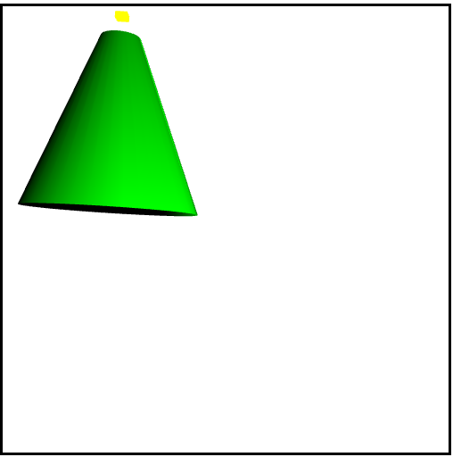

Name: Abraham Chavez
Student Id: achave11
Assignment: Lab 4
Due Date: November 13, 2016
Driver File
Note to grader. The requirements are fullfilled in complete in perspective view, the yellow cube is there
to provide insight in regards to the movement of the camera and not otherwise.
Also observe that the requirements do not request for previous functionalitys. It only
request for the user to be able to change viewpoints.
